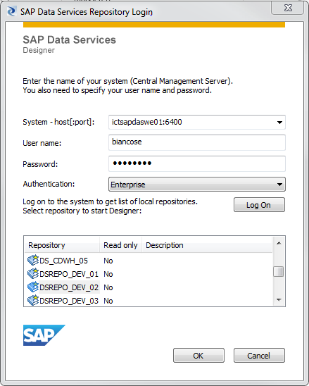

DataWarehouse : Migration prepare the enviroment
Created by Michael Hadorn, last modified on Aug. 24, 2022
- Login to your new DSREPO_DEV_[YourNumber] (same server, same user, same password)

If not yet in place, you might need to configure an ODBC connection as follow:
- Import the substitution parameters from previously exported file from your old DS Repository:
- Change Default configuration to your imported Substitution Paramenters Configurations and delete the old default configuration: a. Under 'Tools' -> 'System configuration' add a new configuration and set it to default b. Now you can delete the additional configuration from 'Tools'->'Substitution Parameters Configurations..'
- Connect to the new central repository DSREPO_CENT and activate it from 'Tool'->'Central Repositories..':
- Get latest version and dependencies of Job BJ_LZ_ZAMD: With this you get a new Datastore called CDWH (our new HANA Target datastore) and all changed CF_MD_- custom functions:
- Change the Datastore Connection of DS_REPO to your new HANA based DS Repo: DSREPO_DEV_[YourNumber]:
- Connect for the first time to your personal schema in SAP HANA STUDIO and set your new password (ask old one to a collegue):
- Making sure, that you selected the correct odbc-driver for ds:
C:\Program Files (x86)\SAP BusinessObjects\Data Services\bin\ODBCDriversSelector.exe
[run as admin, else the changes will not be saved]
{kind=link}
{kind=link}
{kind=link}
{kind=link}
{kind=link}
{kind=link}
{kind=link}
{kind=link}